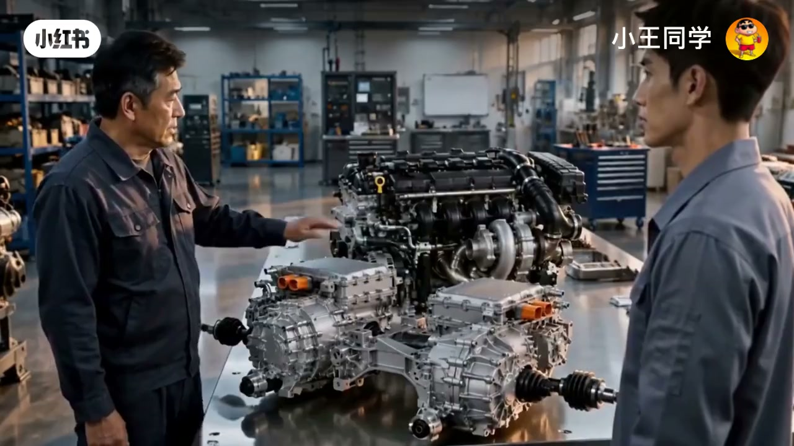
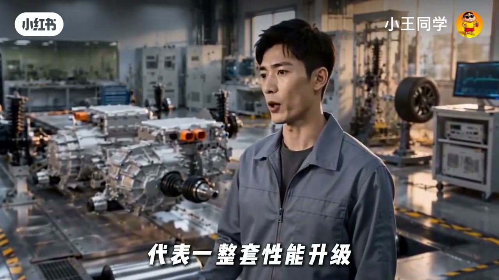
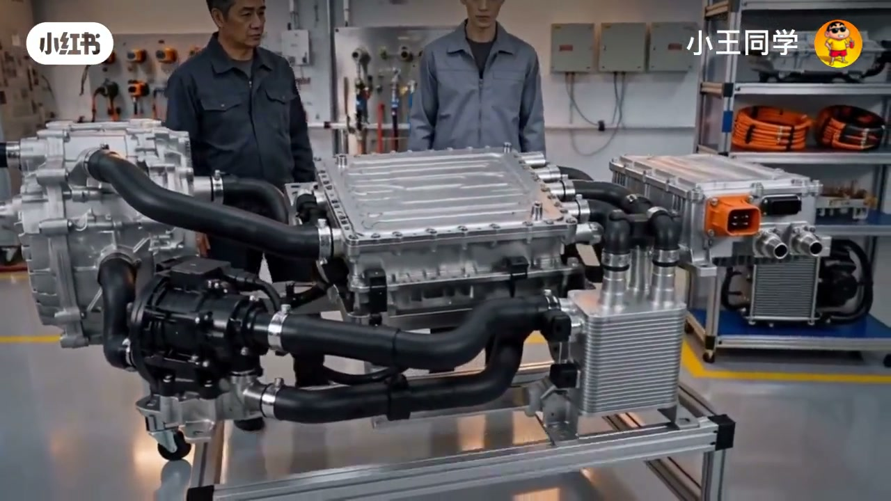
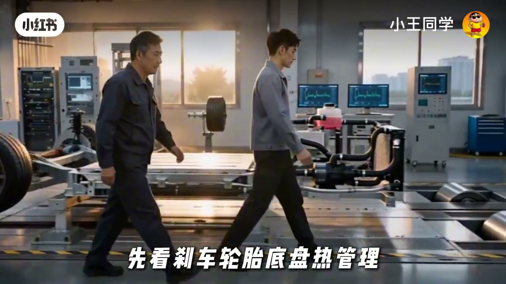

内容要点
徒弟觉得电机加两三百匹不用像内燃机那样整套加强燃烧系统，所以电车五百匹基本白送。师傅分层拆：第一层电机响应确实简单；第二层电从哪来——电池瞬时放电、逆变器与热管理成本没消失，只是搬家；第三层也是最关键——这五百匹要持续多久。零百几秒满功率，和赛道连续高负荷几分钟，不是同一张成本账单。
知识结构
电机加功率不必重做整套燃烧强化，门槛观感更低。
五百匹电要电池放得出、逆变器送得出、热压得住——成本搬家。
峰值几秒 vs 持续几十秒到几分钟：持续时间决定成本是否「白送」。
看电车马力，先问持续时长与热管理，再谈峰值数字是否便宜。
00:00-01:20电机简单，不等于系统便宜
徒弟的直观对比：同样增加两三百匹，电机不用把整套燃烧机器重新加强一遍——这是「第一层」事实。但师傅立刻刹住「所以五百匹白送」的跳跃。
工作台上的电驱总成（含橙色高压接口）被用作视觉锚点：功率数字好写，能量与热量路径仍在。

01:20-02:40五百匹电从哪来
追问链条：电池瞬间能不能放出这么大功率？逆变器能不能送出去？电机电池逆变器热起来以后能不能压得住？
结论句：大功率的成本没消失，只是从发动机里搬到了另一套系统里——电池、电控与冷却。

02:40-04:04要持续多久：峰值与持续是两回事
解释二十万能标五百匹的关键漏问：这五百匹要持续多久？一脚电门零百加速，满功率可能只要几秒；连续高速或赛道高负荷，可能要持续几十秒甚至几分钟。
「把五百匹做出来，这是第一步」——短片用未说完的下一步暗示：做出峰值只是入门，压住持续时间才是成本真相。Whisper 后段有截断，正文以画面字幕与已转录层为准，不补写未出现的参数。


完整转录（32段）
以下文本由 Whisper medium 模型自动转录，可能存在少量识别误差，已尽可能修正。
师傅,我一直想不通
可以同样增加两三百匹
电机不用把整套燃烧机器重新加强一遍
这就是第一层
那我懂了
电机简单
所以电车五百匹基本就是白送
你又说早了
还有什么
五百匹的电从哪来
电池
电池瞬间能不能放出这么大功率
逆变器能不能送出去
电机电池逆变器热起来以后
能不能压得住
所以大功率的成本没消失
没消失
只是从发动机里
搬到了另一套系统里
那为什么二十万的电车还是赶标五百匹
因为你漏问了一句
什么
这五百匹
要持续多久
一脚电门零百加速
满功率可能只需要几秒
但连续高速赛道高负荷
要持续几十秒
甚至几分钟
,
把五百匹做出来
这是第一步